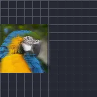

Blur Gerak Sejati

Memblurkan lapisan mengikuti gerak, putaran dan pembesarannya yang sebenarnya, seperti rana kamera. Sudut rana yang lebih lebar memberi jejak lebih panjang dan sampel lebih banyak membuatnya lebih halus. Pratinjau menampilkan blur yang lebih cepat kecuali Full Blur aktif.
Blur gerak sejati bekerja seperti rana kamera. Sudut Rana adalah berapa lama rana tetap terbuka: 180 derajat adalah tampilan film biasa dan 360 memberikan jejak terpanjang. Sampel adalah berapa banyak salinan yang digabungkan: lebih banyak lebih halus tetapi lebih lambat.
Ini mengikuti gerakan nyata lapisan, termasuk efek gerak. Pratinjau menampilkan perkiraan cepat kecuali Blur Penuh diaktifkan di strip pratinjau.
Pengaturan
| Pengaturan | Jenis | Rentang | Default |
|---|---|---|---|
| Sudut Rana | Sudut | 0° hingga 360° | 180° |
| Sampel | Angka | 2 hingga 32 | 8 |